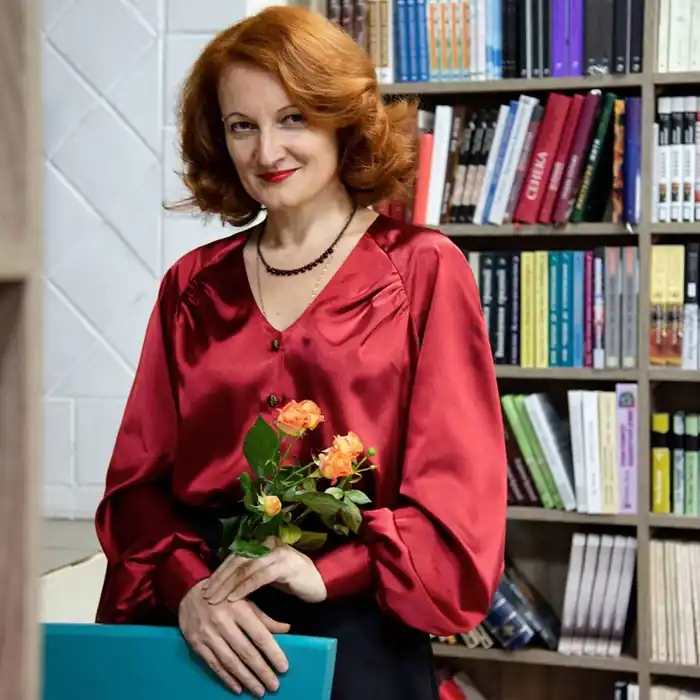
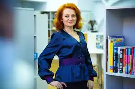
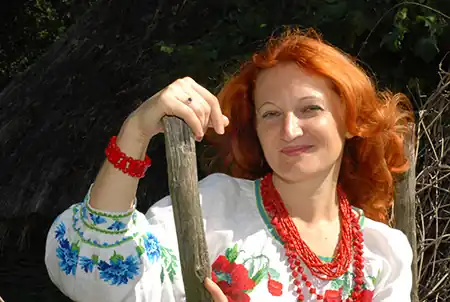

Рижко Олена Миколаївна народилася 22 квітня 1975 року в селі Вільшанка Чуднівського району Житомирської області.
Українська поетеса, прозаїкиня, літературознавиця. Член Національної спілки письменників України (від 2004 року). Кандидатка філологічних наук (2006). Доцентка (2007). Доктор наук із соціальних комунікацій (2018).
У 1992–1994 роках навчалась у Житомирському державному педагогічному інституті імені Івана Франка на філологічному факультеті. 1998 року з відзнакою закінчила Київський педагогічний інститут. У 1998–1999 роках працювала літературною редакторкою видавництва "Горудень" (Київ). У 1999–2002 роках була науковою співробітницею КБ Енциклопедії Сучасної України Національної академії наук України. У 2002–2008 роках – доцентка кафедри теорії та історії журналістики Київського міжнародного університету. Від грудня 2008 року – доцентка кафедри журналістики Інституту міжнародних відносин Національного авіаційного університету. З вересня 2018 р. – доцент кафедри соціальних комунікацій Інституту журналістики Київського національного університету імені Тараса Шевченка. 2005 року захистила кандидатську дисертацію "Рубаї в жанрово-стильовій системі української поезії другої половини XX століття". 2018 року захистила докторську дисертацію на тему "Плагіат у соціальнокомунікаційному вимірі початку XXI століття: природа явища та історія боротьби". Авторка 109 наукових і навчально-методичних робіт. Наукові зацікавлення: соціальна комунікація, аксіологія медіасфери, масова комунікація і Церква, медіаекологія, медіакритика, стилістика. Друкувалась у літературних журналах "Київ", "Сучасність", "Кур'єр Кривбасу". Брала участь у телепрограмах "…і вишите життя… Майстриня Олена Рижко" (ДТРК "Всесвітня служба "УТР"", Київ), "Хрещатик, 26" і "Час сови" (Центральний канал, Київ). Портал Zruchno.Travel спільно з Оленою Рижко відкрив постійну рубрику "Літературні мандрівки з Оленою Рижко". Бібліографія: "Суїцизм // Тен-клуб" (Житомир, 1994); "Любов до чорного строю" (Київ, 1998); "В обіймах Місафір" (Київ, 2002); "Між бажанням і вчинком" (Київ, 2004); "Любов/Ненависть" (Київ, 2006). роман "Карнавал триває"; роман "Сни" (Житомир: Рута, 2011); роман "Ще одна історія про…" (Київ: Фенікс, 2016); повість для підлітків "Дівчина з міста" (Київ: ВЦ "Академія", 2018); повість для підлітків "Знає тільки Мару" (Київ: ВЦ "Академія", 2018); повість для підлітків "Король Даркнету" (Київ: ВЦ "Академія", 2018); повість для підлітків "Мишоловка" (Київ: ВЦ "Академія", 2019); повість для підлітків "Ужалений зрадою" (Київ: ВЦ "Академія", 2020)